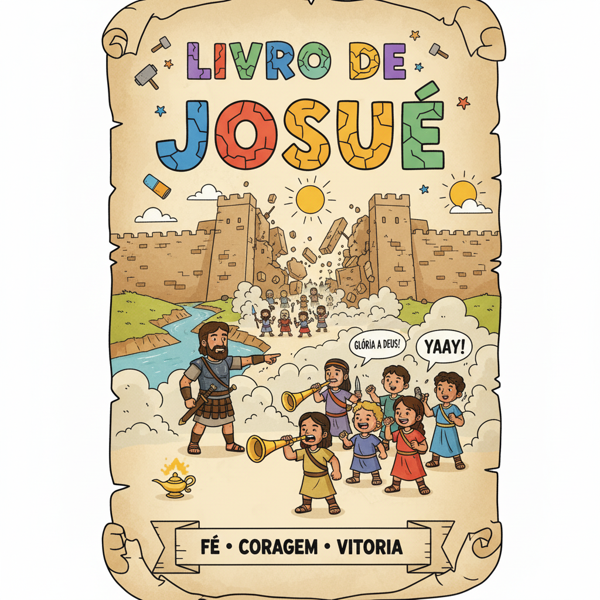
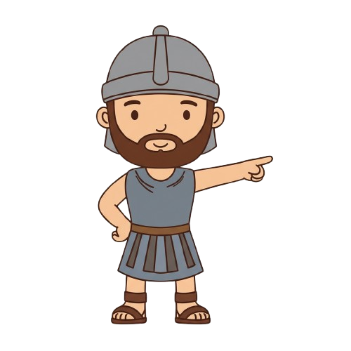
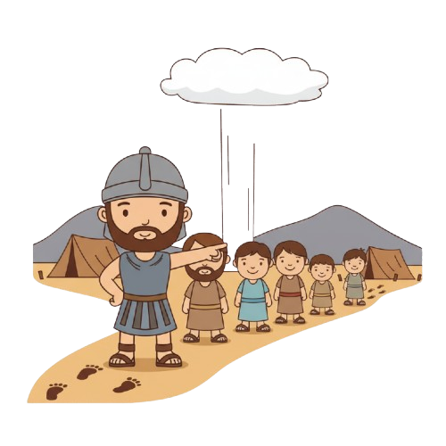
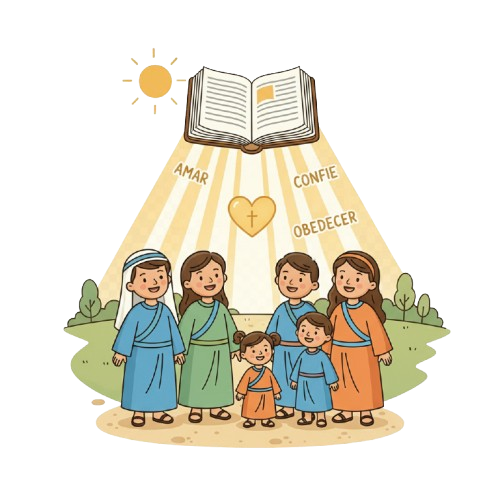
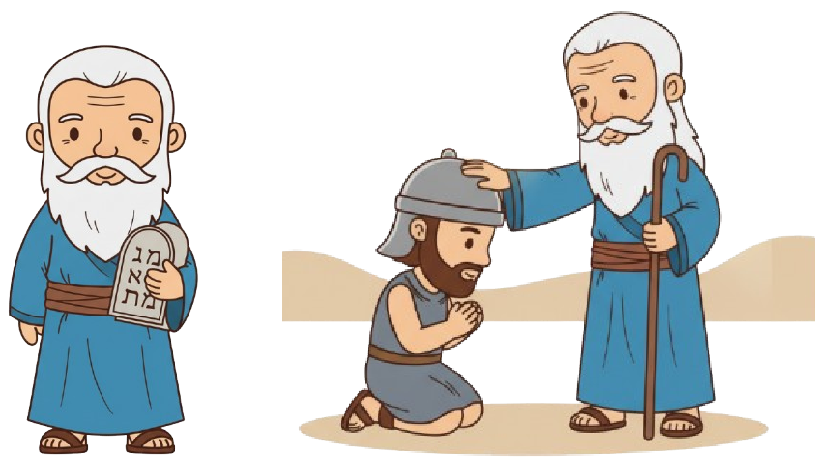
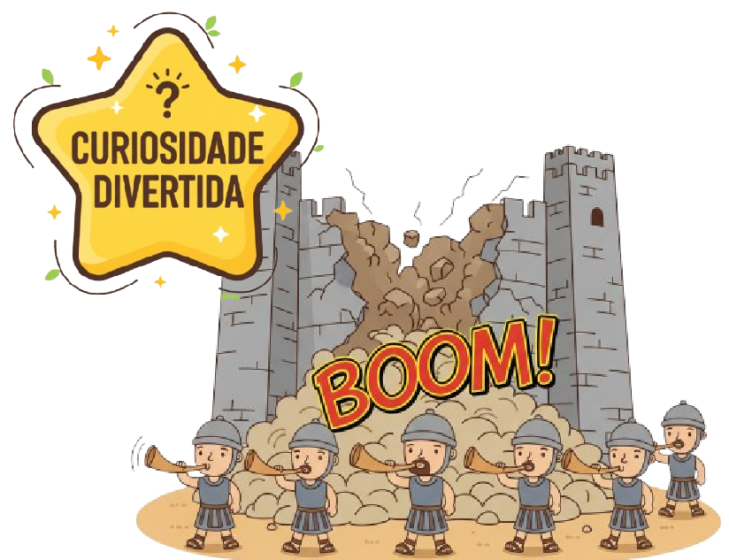

A Conquista da Terra Prometida — Um Resumo Visual para Crianças
Josué era forte, Josué era fiel,
Deus lhe disse: "Seja corajoso, esse é teu papel!"
Com o povo atravessou o rio Jordão,
Confiando em Deus de todo coração!
📖 Josué 1:9 — "Sê forte e corajoso... porque o Senhor teu Deus estará contigo por onde quer que andares."
Jericó tinha muros tão altos assim,
Mas Deus tinha um plano desde o fim!
Marcharam, tocaram, gritaram com fé,
E os muros caíram aos seus pés!
📖 Josué 6:20 — "Quando o povo ouviu o sonido da trombeta... os muros caíram."
No final da vida, Josué proclamou:
"Escolham hoje a quem vão servir, meu irmão!"
"Eu e minha casa serviremos ao Senhor,
Pois Ele é fiel, nosso protetor!"
📖 Josué 24:15 — "Eu e a minha casa serviremos ao Senhor."
"Sê forte e corajoso... porque o Senhor teu Deus estará contigo por onde quer que andares."
— Josué 1:9
⚔️ O que isso significa? Deus disse essas palavras para Josué no momento mais assustador da sua vida: Moisés havia morrido e ele tinha que liderar dois milhões de pessoas para conquistar cidades muradas. Coragem não é ausência de medo — é avançar mesmo com medo, sabendo que Deus vai junto!

Ex-espião, ex-assistente de Moisés, agora comandante-chefe de Israel. Seu nome em hebraico — Yehoshua — significa "O Senhor salva", o mesmo nome de Jesus! Deus o escolheu por sua fé inabalável desde jovem.
📖 Js 1:1-2 — "Levanta-te, passa este Jordão, tu e todo este povo, à terra que eu lhes dou."
Moradora de Jericó que escondeu os espiões israelitas e colocou um cordão vermelho na janela como sinal de proteção. Uma mulher de fé extraordinária — e seus descendentes aparecem na genealogia de Jesus!
📖 Js 2:11 — "O Senhor, vosso Deus, é Deus em cima nos céus e embaixo na terra."
Após a vitória de Jericó, Acã escondeu objetos proibidos no seu acampamento. Por causa disso, Israel perdeu a próxima batalha em Ai. Uma lição dolorosa: o pecado escondido afeta toda a comunidade!
📖 Js 7:20 — "Acã respondeu... Pequei contra o Senhor, Deus de Israel."
Os sacerdotes entraram no rio carregando a Arca da Aliança — e as águas se abriram! O povo atravessou em terra seca, como havia feito no Mar Vermelho. Deus recomeçou a história com o mesmo tipo de milagre!
📖 Js 3:17 — "Os sacerdotes... ficaram parados em terra seca... até que todo o povo havia passado."
A cidade mais fortemente murada da terra. O plano de Deus: marchar em silêncio ao redor por 7 dias, tocar as trombetas e gritar no sétimo dia. Os muros caíram! A vitória mais improvável da história militar foi conquistada pela obediência.
📖 Js 6:20 — "O povo soltou um grande grito... os muros caíram, e o povo subiu à cidade."
Na batalha de Gibeão, Josué precisava de mais luz do dia para terminar a vitória. Ele orou e pediu que o sol parasse — e parou! A Bíblia diz que "não houve dia igual antes nem depois" (Js 10:14). Deus controla até o tempo!
📖 Js 10:13 — "O sol parou no meio do céu e não se apressou a pôr-se."
Após as batalhas, Josué dividiu a terra entre as 12 tribos de Israel. Cada família recebeu sua herança — a promessa feita a Abraão há centenas de anos estava cumprida. Josué terminou o que Moisés começou!
📖 Js 21:45 — "Não falhou uma só palavra de todas as boas palavras que o Senhor havia falado."


Desde Gênesis 12, Deus prometeu a Abraão uma terra. Em Josué, essa promessa finalmente se cumpre. Cada acre de Canaã era a prova: o que Deus promete, Ele entrega — não importa quanto tempo leve!
📖 Js 21:45 — "Não falhou uma só palavra de todas as boas palavras que o Senhor havia falado."
"Eu e minha casa serviremos ao Senhor" (Js 24:15) é uma das declarações mais citadas por famílias cristãs até hoje. Josué disse isso já idoso, olhando para trás — e sua escolha moldou o futuro de sua família inteira!
📖 Js 24:15 — "Eu e a minha casa serviremos ao Senhor."
Josué (Yehoshua) e Jesus têm o mesmo nome! Assim como Josué levou Israel à terra prometida, Jesus leva Seu povo à vida eterna. Josué conquistou com espada; Jesus conquistou com amor na cruz.
📖 Js 1:3 — "Todo lugar que pisar a planta do vosso pé, vo-lo darei."
Josué não tinha tanques nem aviões — tinha a presença de Deus e obediência. As batalhas foram ganhas não pela força militar, mas pela fé. O livro inteiro grita: quem anda com Deus não pode ser derrotado!
📖 Js 1:5 — "Ninguém te poderá resistir todos os dias da tua vida."
Deus disse a Josué para não se afastar da Lei, meditando nela de dia e de noite. Toda vitória dependia dessa obediência à Palavra. Quando o povo desobedeceu (Acã), a derrota veio imediatamente.
📖 Js 1:8 — "Não se aparte da tua boca este livro da lei... então farás prosperar o teu caminho."
Josué fecha o arco narrativo aberto em Gênesis 12. A terra prometida a Abraão agora pertence aos seus descendentes. A história de Deus não tem pontas soltas — cada promessa chega ao seu cumprimento!
📖 Js 23:14 — "Nem uma só palavra de todas as boas palavras falhou — todas se cumpriram."


"Josué" em hebraico é "Yehoshua", e em grego se torna "Iesous" — Jesus! Os dois têm literalmente o mesmo nome, que significa "O Senhor salva". Josué salvou o povo fisicamente; Jesus salva espiritualmente para sempre!
Nenhum general na história jamais pensaria em conquistar uma cidade murada marchando em silêncio por 6 dias e depois gritando no sétimo! Era um plano que só funcionaria se Deus agisse — e foi exatamente por isso que Deus deu esse plano. A glória era Dele, não dos soldados.
Em Josué 10:13, o sol parou por quase um dia inteiro para que Israel terminasse a batalha. Alguns cientistas da NASA já relataram encontrar em cálculos astronômicos um "dia extra" perdido na história. Será? Deus controla o cosmos!
Deus disse "Sê forte e corajoso" três vezes para Josué — o que mostra que Josué provavelmente estava com medo! Coragem não é não ter medo, é agir mesmo tendo medo. Que situação na sua vida pede esse tipo de coragem?
Marchar em silêncio por 7 dias deve ter parecido ridículo para os soldados. Já houve uma situação em que Deus te pediu para fazer algo que parecia estranho ou difícil de explicar para os outros? O que aconteceu?
Josué disse: "Eu e minha casa serviremos ao Senhor." Que decisões concretas fazem uma família "servir ao Senhor"? O que você pode fazer para que isso valha na sua casa?
Escreva Josué 1:9 e cole no seu espelho. Toda manhã, antes de sair, leia em voz alta. Quando vier o medo ou a insegurança, lembre: Deus está contigo por onde quer que andares!
Esta semana, diga para sua família (ou escreva em algum lugar na sua casa): "Eu e minha casa serviremos ao Senhor!" Converse com seus pais sobre o que isso significa na prática para vocês.
Identifique um "muro" que parece impossível na sua vida — um medo, um hábito ruim, um relacionamento difícil. Ore sobre isso esta semana como Josué marchava: com fé silenciosa, dia após dia, confiando que Deus vai agir!
© 2025 - Trilho Kids
Desenvolvido com ❤️ para crianças